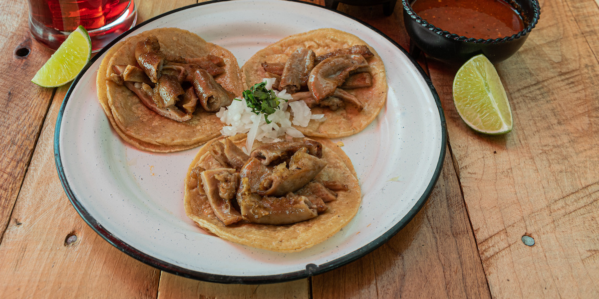

Home
Tripitas Tacos/Tacos de Tripas Recipe

Description
Simple and delicious tripas tacos!
Cook the tripas for longer for extra crunch!!
Ingredients
- 4 pounds tripas
- 1 white onion
- 1 teaspoon salt
- 2 tablespoons vegetable oil
- 1 bunch cilantro
Directions
- Fill pot with water over medium-high heat
- Thoroughly clean and rinse tripe quickly to avoid rubbery texture
- Simmer tripitas in pot for 30 minutes over low heat
- Allow to cool then remove fat in the broth
- Drain, dry, then cut into bite-size pieces
- Add oil to skillet and fry tripas for 8 to 10 minutes
- Serve with corn tortillas with onion, cilantro, and salsa
- Salt to taste